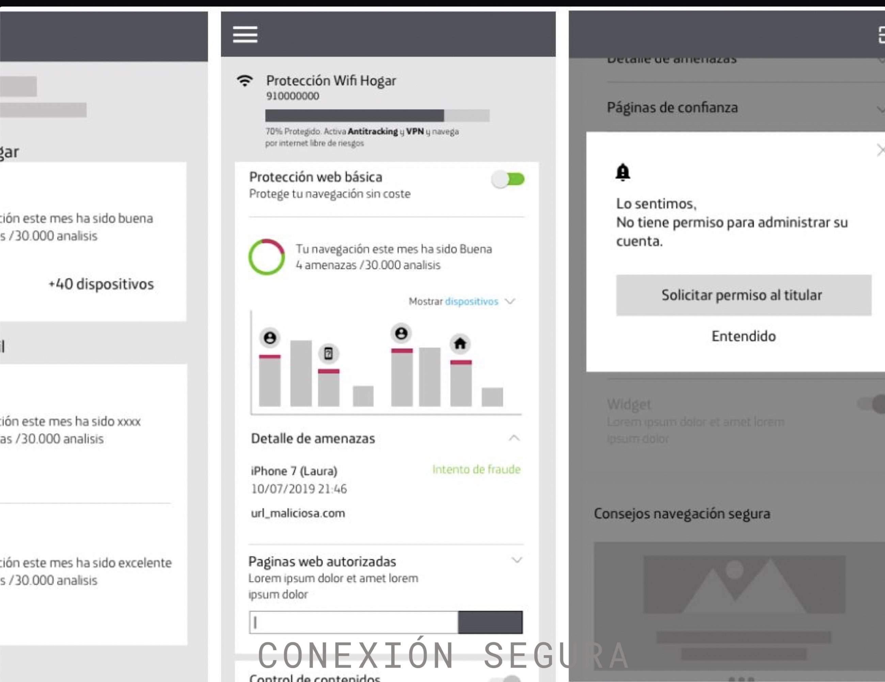
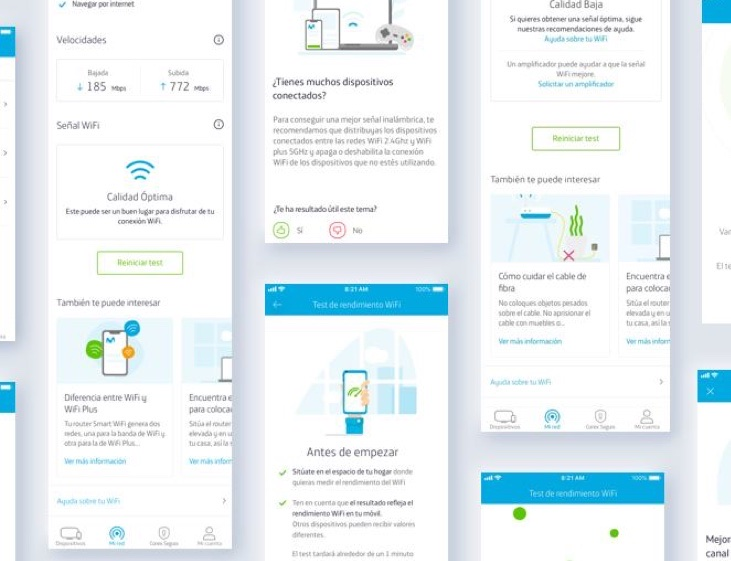
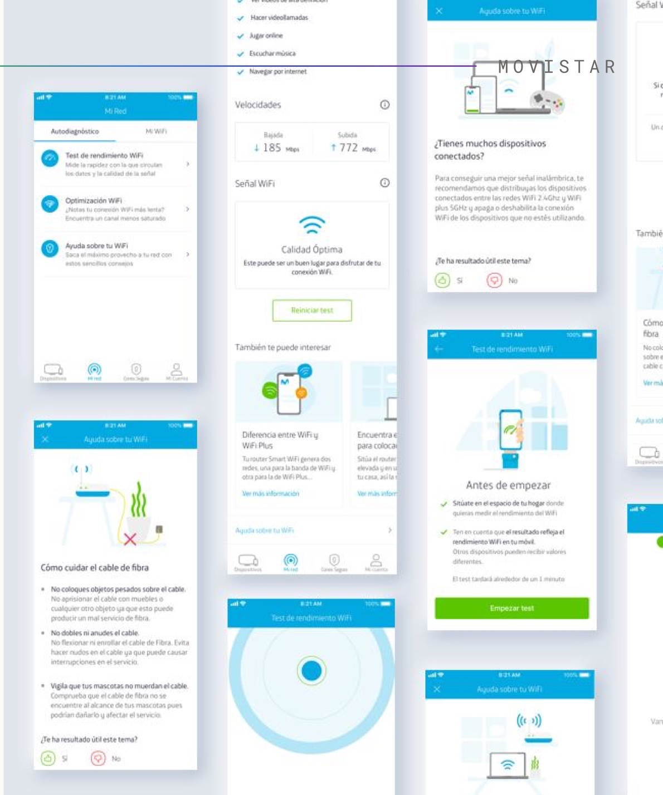
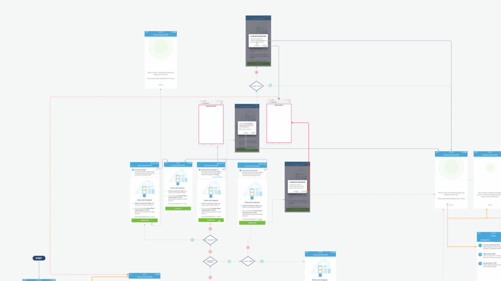
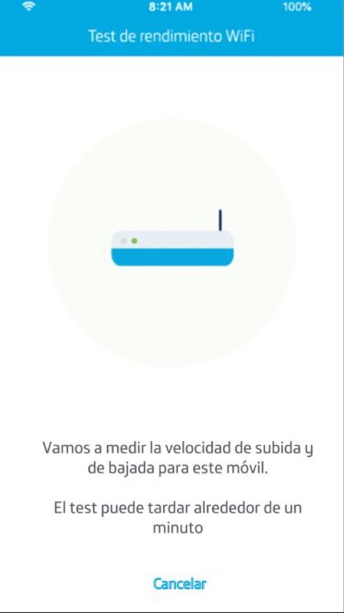
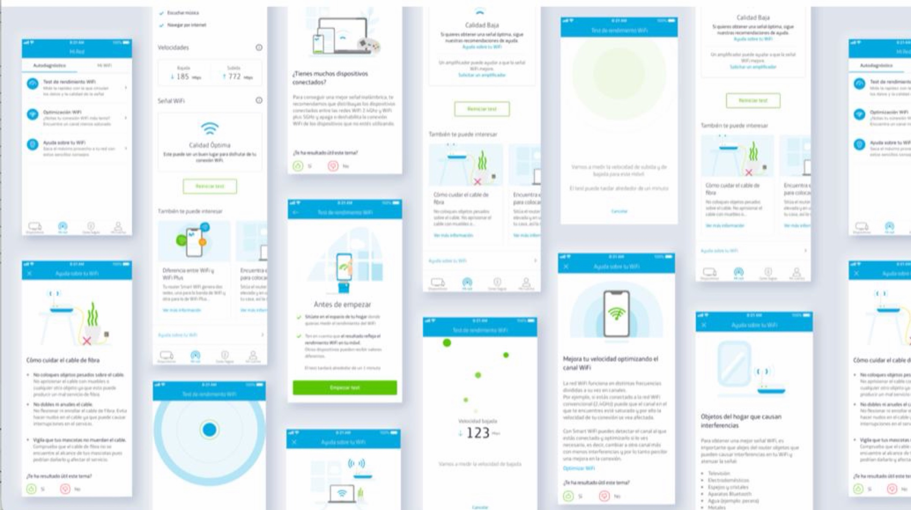
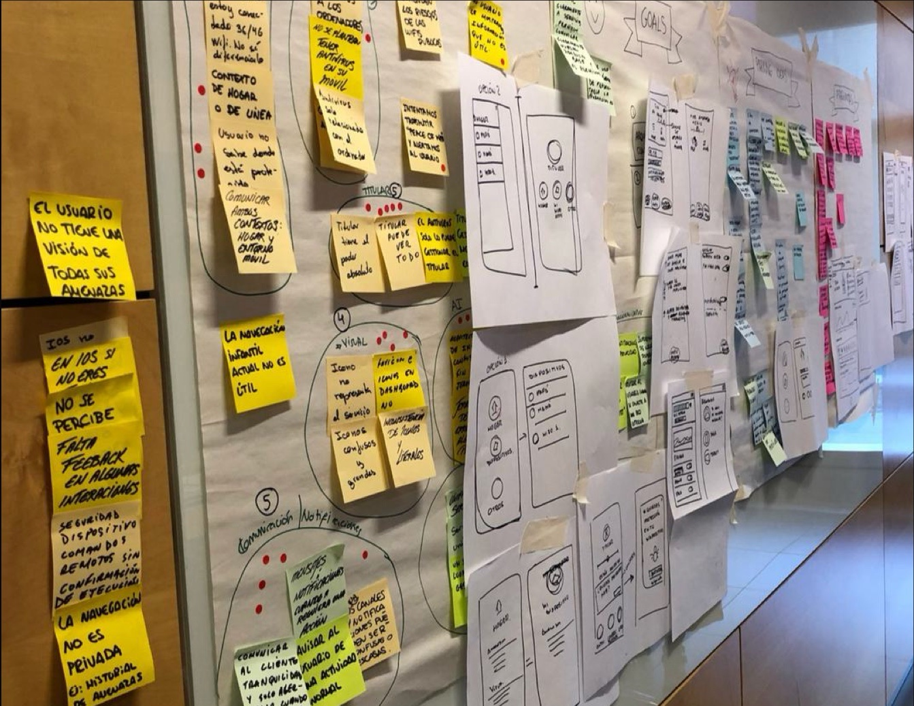

Designing across
connected consumer experiences
Three products. Three interaction models.
Three products. Three different design challenges.

Conexión Segura
Security self-service dashboard.
Business goalIncrease service activation and improve service management.
Smart WiFi Selfcare
Connectivity diagnosis and self-service.
Business goalIncrease self-service and reduce calls to 1002.

Living Apps
TV experiences and partner-built Living Apps.
Business goalEnable Telefónica partners to create and update Living Apps more independently.
Design simple experiences while working within very different technical, business and interaction constraints.
How can the experience make a slow technical process understandable enough that users stay with it instead of abandoning it and calling support?
Movistar's Smart WiFi experience spanned different touchpoints, but users needed to understand and manage a technically complex connectivity problem.
Business goalIncrease self-service and reduce dependence on customer support.

Decrease calls to 1002 by making users feel in control.
Designing inside the constraints, not around them
I was the UX designer on the feature, working within Movistar's existing design system and alongside the engineering team building it.
- 01End-to-end interaction and navigation flow for the Selfcare feature
- 02Edge-case mapping with engineering across iOS and Android
- 03Motion design for the diagnostic sequence, to make waiting legible
- 04A set of original illustrations for the help and FAQ content
- 05Final designs delivered within the Movistar design system
The flow engineering could break
I brought a wireflow to every grooming session. Not a finished design for approval: a working flow that engineering could break, so technical reality shaped it while it was still cheap to change.

“There are two kinds of time: clock time and brain time.”
The test was slow and would stay slow. Accepting that moved the problem from speed to comprehension, and comprehension was solvable.

Final UI

Where the problems were written down

Do people stay with the wait?
No product analytics were available to me on this work, so this is the plan rather than the result. Written as it would go to the team.
People diagnosed their own connection
We couldn't make the test faster. We could make the waiting understandable.
Progress · feedback · motion · illustration.
iOS + Android · technical states · permissions · device conditions · navigation · edge cases.
Wireflows brought into engineering grooming · close front-end collaboration · Movistar Mystica design system · micro-interactions · illustrations.
The design didn't remove the technical constraint. It translated it into an experience people could understand and complete.